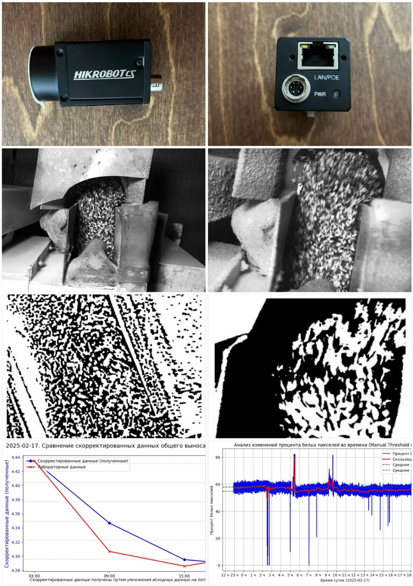

Привет! Я Александр
Computer Vision Engineer и Data Scientist
Добро пожаловать в моё портфолио! Здесь вы можете найти информацию о моих проектах, демонстрации и описания.
Сайт портфолио |
Видеовизитка
Мои проекты
Автоматизация контроля ядер подсолнечника методом компьютерного зрения
Проект направлен на автоматизацию контроля содержания ядер подсолнечника в шелухе на производстве. Использованы классические методы компьютерного зрения (бинаризация и фильтрация).
Изначально выявлена высокая корреляция (до 0.98) процента белых пикселей с лабораторными измерениями содержания ядер,
однако дополнительная перепроверка командой заказчика на кратковременных выбросах показала ограниченность подхода и необходимость дальнейших исследований с применением моделей глубокого обучения.
- Сбор и анализ данных с промышленных GigE Vision камер.
- Подтверждение корреляции между лабораторными замерами и процентом белых пикселей в ряде случаев.
- Дополнительный эксперимент выявил ограничения текущего метода при коротких выбросах.
Технологии: Python, OpenCV, Aravis, Pandas, NumPy

Выводы и перспективы: Необходима дальнейшая разработка с использованием машинного обучения и автоматической калибровки для повышения устойчивости и точности метода.
Система подсчета трафика
"Система подсчета автомобильного трафика по полосам движения в реальном времени с трекингом и классификацией на базе YOLO и Raspberry Pi."
- Трекинг и классификация транспорта в реальном времени.
- Запись результатов в базу данных.
- Низкие системные требования, работа на Raspberry Pi.
Технологии: YOLO, Raspberry Pi, OpenCV, Python


Сервис OCR + LLM для изображений книг
Извлечение ключевой информации из изображений книг. Обрабатывает около 3000 запросов в день.
- Использование LLM для анализа текста.
- Высокая производительность: обработка тысяч запросов ежедневно.
- REST API для интеграции с другими системами.
Технологии: OCR, LLM, FastAPI, Python

Lipsync и реставрация лиц с GAN
Реставрация лиц и улучшение качества видео с помощью GAN в рамках рабочего проекта в компании. Работа с моделями lipsync для синхронизации мимики с аудио.
- Детекция, идентификация лиц
- Устранение артефактов в мимике
- Синхронизация мимики с аудио
- Использование предобученных моделей и кастомизация
Технологии: Python, Wav2Lip, YOLOv5, tortoise-TTS, GFPGAN, GAN, VideoReTalking, Roop

Контакты
Email: alnibl88@gmail.com
GitHub: Посетить мой профиль
Telegram: @Alnibl
Сайт портфолио: https://alnibl.github.io/Portfolio/